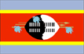
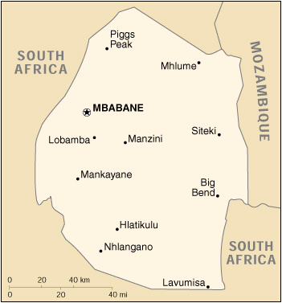

{kind=link}


| Swaziland |  |
|
|  | |
| Introduction |
Background: Autonomy for the Swazis of southern Africa was guaranteed by the British in the late 19th century; independence was granted 1968. Student and labor unrest during the 1990s have pressured the monarchy (one of the oldest on the continent) to grudgingly allow political reform and greater democracy.
| Geography |
Location: Southern Africa, between Mozambique and South Africa
Geographic coordinates: 26 30 S, 31 30 E
Map references: Africa
Area:
total:
17,363 sq km
land:
17,203 sq km
water:
160 sq km
Area - comparative: slightly smaller than New Jersey
Land boundaries:
total:
535 km
border countries:
Mozambique 105 km, South Africa 430 km
Coastline: 0 km (landlocked)
Maritime claims: none (landlocked)
Climate: varies from tropical to near temperate
Terrain: mostly mountains and hills; some moderately sloping plains
Elevation extremes:
lowest point:
Great Usutu River 21 m
highest point:
Emlembe 1,862 m
Natural resources: asbestos, coal, clay, cassiterite, hydropower, forests, small gold and diamond deposits, quarry stone, and talc
Land use:
arable land:
11%
permanent crops:
0%
permanent pastures:
62%
forests and woodland:
7%
other:
20% (1993 est.)
Irrigated land: 670 sq km (1993 est.)
Natural hazards: NA
Environment - current issues: limited supplies of potable water; wildlife populations being depleted because of excessive hunting; overgrazing; soil degradation; soil erosion
Environment - international agreements:
party to:
Biodiversity, Climate Change, Endangered Species, Nuclear Test Ban, Ozone Layer Protection
signed, but not ratified:
Desertification, Law of the Sea
Geography - note: landlocked; almost completely surrounded by South Africa
| People |
Population:
1,083,289
note:
estimates for this country explicitly take into account the effects of excess mortality due to AIDS; this can result in lower life expectancy, higher infant mortality and death rates, lower population and growth rates, and changes in the distribution of population by age and sex than would otherwise be expected (July 2000 est.)
Age structure:
0-14 years:
46% (male 245,626; female 247,825)
15-64 years:
52% (male 270,308; female 291,884)
65 years and over:
2% (male 11,357; female 16,289) (2000 est.)
Population growth rate: 2.02% (2000 est.)
Birth rate: 40.64 births/1,000 population (2000 est.)
Death rate: 20.4 deaths/1,000 population (2000 est.)
Net migration rate: 0 migrant(s)/1,000 population (2000 est.)
Sex ratio:
at birth:
1.03 male(s)/female
under 15 years:
0.99 male(s)/female
15-64 years:
0.93 male(s)/female
65 years and over:
0.7 male(s)/female
total population:
0.95 male(s)/female (2000 est.)
Infant mortality rate: 108.95 deaths/1,000 live births (2000 est.)
Life expectancy at birth:
total population:
40.44 years
male:
39.54 years
female:
41.37 years (2000 est.)
Total fertility rate: 5.87 children born/woman (2000 est.)
Nationality:
noun:
Swazi(s)
adjective:
Swazi
Ethnic groups: African 97%, European 3%
Religions: Christian 60%, indigenous beliefs 40%
Languages: English (official, government business conducted in English), siSwati (official)
Literacy:
definition:
age 15 and over can read and write
total population:
76.7%
male:
78%
female:
75.6% (1995 est.)
| Government |
Country name:
conventional long form:
Kingdom of Swaziland
conventional short form:
Swaziland
Data code: WZ
Government type: monarchy; independent member of Commonwealth
Capital: Mbabane; note - Lobamba is the royal and legislative capital
Administrative divisions: 4 districts; Hhohho, Lubombo, Manzini, Shiselweni
Independence: 6 September 1968 (from UK)
National holiday: Somhlolo (Independence) Day, 6 September (1968)
Constitution: none; constitution of 6 September 1968 was suspended 12 April 1973; a new constitution was promulgated 13 October 1978, but was not formally presented to the people; since then a few more outlines for a constitution have been compiled under the Constitutional Review Commission (CRC), but so far none have been accepted
Legal system: based on South African Roman-Dutch law in statutory courts and Swazi traditional law and custom in traditional courts; has not accepted compulsory ICJ jurisdiction
Suffrage: NA years of age
Executive branch:
chief of state:
King MSWATI III (since 25 April 1986)
head of government:
Prime Minister Sibusiso Barnabas DLAMINI (since 9 August 1996)
cabinet:
Cabinet recommended by the prime minister and confirmed by the monarch
elections:
none; the monarch is hereditary; prime minister appointed by the monarch
Legislative branch:
bicameral Parliament or Libandla, an advisory body, consists of the Senate (30 seats - 10 appointed by the House of Assembly and 20 appointed by the monarch; members serve five-year terms) and the House of Assembly (65 seats - 10 appointed by the monarch and 55 elected by popular vote; members serve five-year terms)
elections:
House of Assembly - last held 16 and 24 October 1998 (next to be held NA 2003)
election results:
House of Assembly - balloting is done on a nonparty basis; candidates for election are nominated by the local council of each constituency and for each constituency the three candidates with the most votes in the first round of voting are narrowed to a single winner by a second round
Judicial branch: High Court, judges are appointed by the monarch; Court of Appeal, judges are appointed by the monarch
Political parties and leaders:
Convention for Full Democracy in Swaziland or COFUDESWA [Sabelo DLAMINI]; Ngwane Socialist Revolutionary Party or NGWASOREP [leader NA]; People's United Democratic Movement or PUDEMO [Mario MASUKU]; Swaziland Communist Party or SWACOPA [Mphandlana SHONGWE]; Swaziland Democratic Alliance (represents key opposition parties) [Jerry NXUMALO]; Swaziland Federation of Trade Unions or SFTU [Jan SITHOLE]; Swaziland Liberation Front or FROLISA [leader NA]; Swaziland National Front or SWANAFRO [leader NA]; Swaziland Youth Congress or SWAYOCO (included in PUDEMO)
note:
political parties are banned by the constitution promulgated on 13 October 1978; illegal parties are prohibited from holding large public gatherings
International organization participation: ACP, AfDB, C, CCC, ECA, FAO, G-77, IBRD, ICAO, ICFTU, ICRM, IDA, IFAD, IFC, IFRCS, ILO, IMF, Intelsat, Interpol, IOC, ITU, NAM, OAU, OPCW, PCA, SACU, SADC, UN, UNCTAD, UNESCO, UNIDO, UPU, WHO, WIPO, WMO, WTrO
Diplomatic representation in the US:
chief of mission:
Ambassador Mary Madzandza KANYA
chancery:
3400 International Drive NW, Washington, DC 20008
telephone:
[1] (202) 362-6683
FAX:
[1] (202) 244-8059
Diplomatic representation from the US:
chief of mission:
Ambassador Gregory L. JOHNSON
embassy:
Central Bank Building, Warner Street, Mbabane
mailing address:
P. O. Box 199, Mbabane
telephone:
[268] 404-6441 through 404-6445
FAX:
[268] 404-5959
Flag description: three horizontal bands of blue (top), red (triple width), and blue; the red band is edged in yellow; centered in the red band is a large black and white shield covering two spears and a staff decorated with feather tassels, all placed horizontally
| Economy |
Economy - overview: In this small landlocked economy, subsistence agriculture occupies more than 60% of the population. Manufacturing features a number of agroprocessing factories. Mining has declined in importance in recent years; high-grade iron ore deposits were depleted by 1978, and health concerns have cut world demand for asbestos. Exports of soft drink concentrate, sugar, and wood pulp are the main earners of hard currency. Surrounded by South Africa, except for a short border with Mozambique, Swaziland is heavily dependent on South Africa from which it receives four-fifths of its imports and to which it sends three-fourths of its exports. Remittances from Swazi workers in South African mines supplement domestically earned income by as much as 20%. The government is trying to improve the atmosphere for foreign investment. Overgrazing, soil depletion, and drought persist as problems for the future.
GDP: purchasing power parity - $4.2 billion (1999 est.)
GDP - real growth rate: 3.1% (1999 est.)
GDP - per capita: purchasing power parity - $4,200 (1999 est.)
GDP - composition by sector:
agriculture:
10%
industry:
48%
services:
42% (1997 est.)
Population below poverty line: NA%
Household income or consumption by percentage share:
lowest 10%:
NA%
highest 10%:
NA%
Inflation rate (consumer prices): 6% (1999 est.)
Labor force: NA
Labor force - by occupation: private sector about 70%, public sector about 30%
Unemployment rate: 22% (1995 est.)
Budget:
revenues:
$400 million
expenditures:
$450 million, including capital expenditures of $115 million (FY96/97)
Industries: mining (coal and asbestos), wood pulp, sugar, soft drink concentrates
Industrial production growth rate: 3.7% (FY95/96)
Electricity - production: 420 million kWh (1998)
Electricity - production by source:
fossil fuel:
48.81%
hydro:
51.19%
nuclear:
0%
other:
0% (1998)
Electricity - consumption: 1.078 billion kWh (1998)
Electricity - exports: 0 kWh (1998)
Electricity - imports:
687 million kWh
note:
imports about 60% of its electricity from South Africa (1998)
Agriculture - products: sugarcane, cotton, corn, tobacco, rice, citrus, pineapples, sorghum, peanuts; cattle, goats, sheep
Exports: $825 million (f.o.b., 1999)
Exports - commodities: soft drink concentrates, sugar, wood pulp, cotton yarn, refrigerators, citrus and canned fruit
Exports - partners: South Africa 74%, EU 12%, Mozambique 5%, US, North Korea (1997)
Imports: $1.05 billion (f.o.b., 1999)
Imports - commodities: motor vehicles, machinery, transport equipment, foodstuffs, petroleum products, chemicals
Imports - partners: South Africa 83%, EU 6%, Japan, UK, Singapore (1997)
Debt - external: $180 million (1999)
Economic aid - recipient: $55 million (1995)
Currency: 1 lilangeni (E) = 100 cents
Exchange rates: emalangeni (E) per US$1 - 6.1237 (January 2000), 6.1087 (1999), 5.4807 (1998), 4.6032 (1997), 4.2706 (1996), 3.6266 (1995); note - the Swazi lilangeni is at par with the South African rand
Fiscal year: 1 April - 31 March
| Communications |
Telephones - main lines in use: 20,000 (1996)
Telephones - mobile cellular: 0 (1996)
Telephone system:
domestic:
system consists of carrier-equipped, open-wire lines and low-capacity, microwave radio relay
international:
satellite earth station - 1 Intelsat (Atlantic Ocean)
Radio broadcast stations: AM 3, FM 4, shortwave 1 (1998)
Radios: 155,000 (1997)
Television broadcast stations: 2 (plus seven repeaters) (1997)
Televisions: 21,000 (1997)
Internet Service Providers (ISPs): 2 (1999)
| Transportation |
Railways:
total:
297 km; note - includes 71 km which are not in use
narrow gauge:
297 km 1.067-m gauge
Highways:
total:
2,896 km (1997 est.)
paved:
NA km
unpaved:
NA km
Ports and harbors: none
Airports: 18 (1999 est.)
Airports - with paved runways:
total:
1
2,438 to 3,047 m:
1 (1999 est.)
Airports - with unpaved runways:
total:
17
914 to 1,523 m:
7
under 914 m:
10 (1999 est.)
| Military |
Military branches: Umbutfo Swaziland Defense Force (Army), Royal Swaziland Police Force
Military manpower - availability:
males age 15-49:
242,398 (2000 est.)
Military manpower - fit for military service:
males age 15-49:
140,299 (2000 est.)
Military expenditures - dollar figure: $23 million (FY95/96)
Military expenditures - percent of GDP: 1.9% (FY95/96)
| Transnational Issues |
Disputes - international: Swaziland has asked South Africa to open negotiations on reincorporating some nearby South African territories that are populated by ethnic Swazis or that were long ago part of the Swazi Kingdom